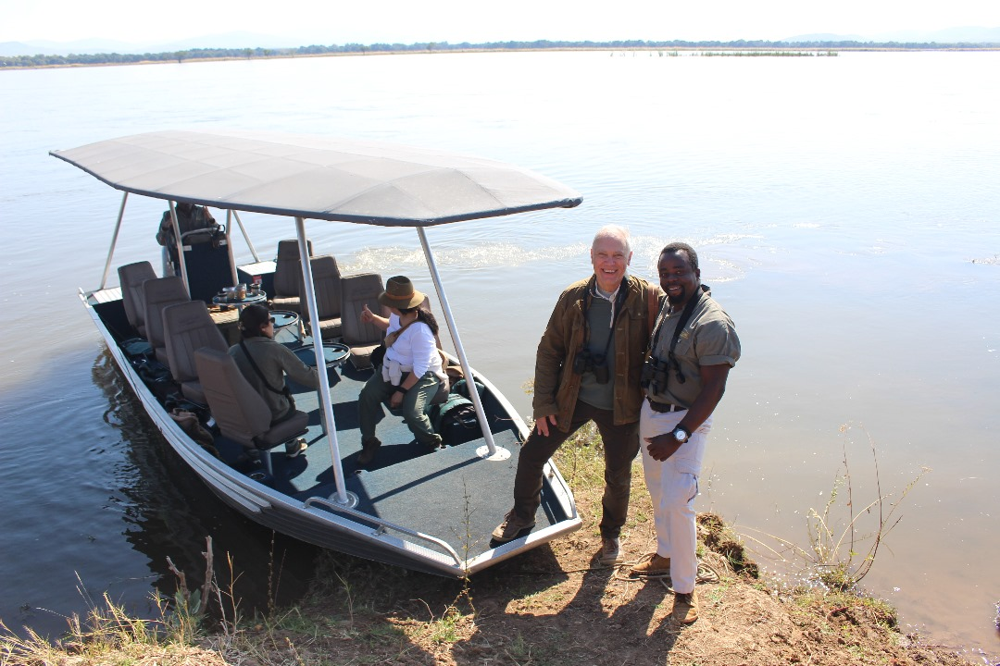
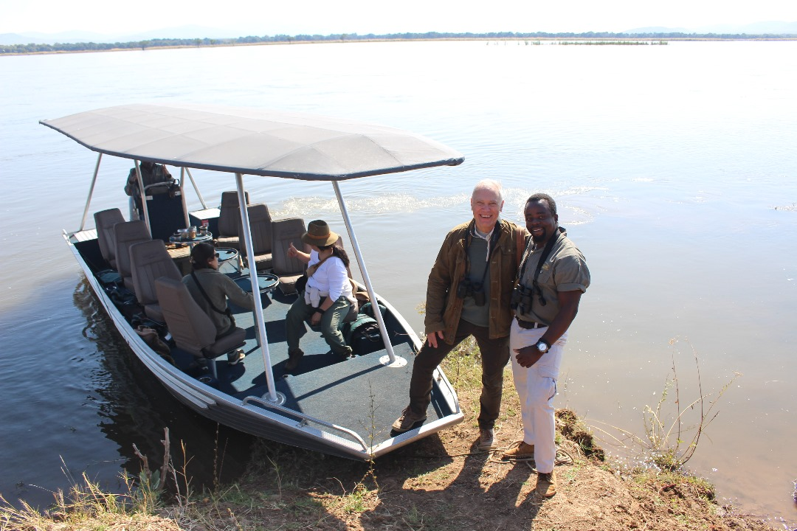
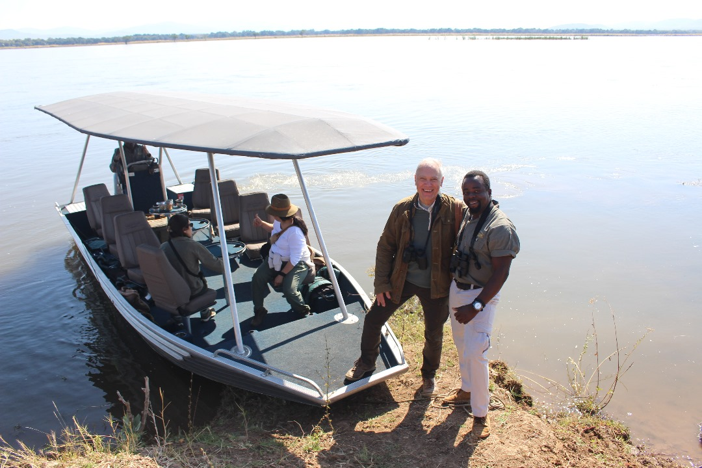

Discover our one-of-a-kind of tented camps in Zimbabwe and engage yourself in the natural beauty of Africa.

Kanyongo Safaris' collection includes most of Zimbabwe's best safari resorts. Our tented safari camps are lined up in popular tourist destinations throughout this magnificent African country. We offer tented camping safaris in Lake Kariba, Chivero Darwendale, Hwange, etc. Similarly, our Mana Pools team offers tented accommodation in a UNESCO World Heritage Site. Then there are two outstanding game resorts in the greatest Lakes of Harare, less than an hour outside the capital of Harare. For guests to enjoy unforgettable African safari experiences, we have directly linked all of our safari properties to ZIMPARKS estates distributed around Zimbabwe. As a result, you can use these picturesque features on any of our Zimbabwe teams. The magnificent Victoria Falls and Hwange National Park are included on tour itineraries.
Kanyongo safaris provides more than simply fantastic African tourist tented accommodations. Each of our properties offers entertaining bush activities. Popular safari activities include game drives, canoeing, and game walks. However, each of our vacation destinations offers activities that are unique to that place. When you book, make sure to ask our reservations team about optional lodge activities.